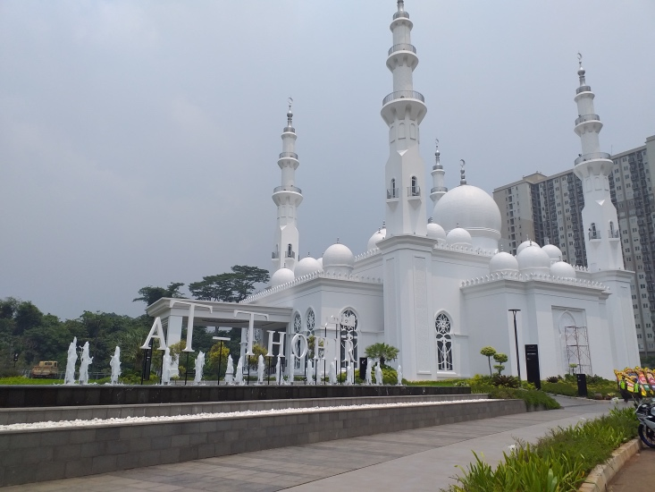

Masjid AT-TOHIR
Masjid At-Thohir yang berada di kawasan perumahan Podomoro Golf View, Tapos, Depok, Jawa
Barat kini menjadi destinasi wisata religi baru di pinggiran kota Jakarta. Masjid ini
dibangun khusus oleh Erick Thohir yang kini menjabat sebagai Menteri BUMN dan kakaknya yang
merupakan pengusaha terkenal, Garibaldi Thohir, yang akrab dipanggil Boy Thohir.
Masjid AT-TOHIR